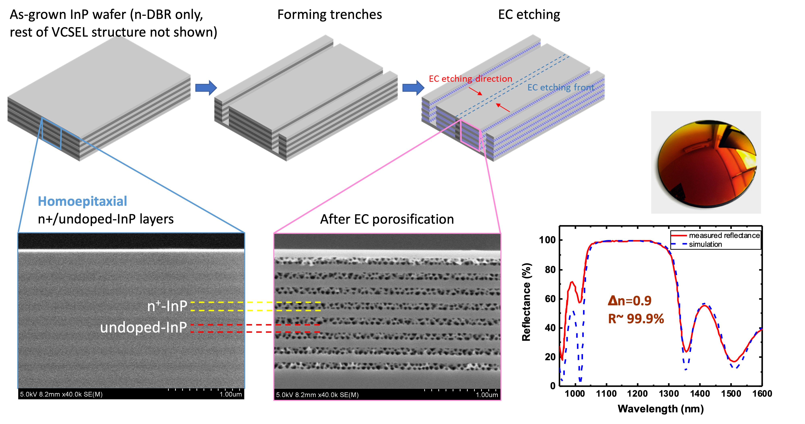
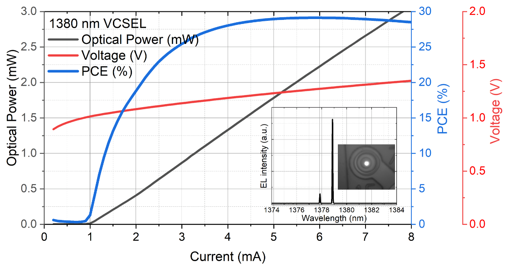

One patented electrochemical process unlocks manufacturable light sources across wavelengths the industry has failed to reach for three decades.
A long-standing industry barrier solved by a single, foundry-compatible process.

Production-grade efficiency and single-mode lasing demonstrated on standard foundry-grown InP epi.

Compared to all prior InP VCSEL approaches, InPHRED's homoepitaxial nanoporous DBR is uniquely manufacturable at commercial scale and low cost.
| Heteroepitaxial DBR Bandwidth10, RayCan |
AlAs/GaAs on GaAs IQE |
Wafer fusion BeamExpress, Trumpf |
Double dielectric DBR Vertilas |
InPHRED nanoporousOUR APPROACH | |
|---|---|---|---|---|---|
| DBR epitaxy | Difficult heteroepitaxy | Mature AlGaAs | Mature AlGaAs | N/A | Homoepitaxy, mature |
| Wavelength range | 1,300–1,600 nm | Up to 1,300 nm | 1,300–1,600 nm | 1,300–1,600 nm | 1,300–2,300 nm |
| Active region | ✓ Mature | ⚠ Reliability issues | ✓ Mature | ✓ Mature | ✓ Mature |
| Monolithic fab | Wafer-level | Wafer-level | ✗ Not scalable | ✗ Not scalable | Wafer-level |
| Volume production | ✗ Difficult | ⚠ Marginal | ✗ Difficult | ✗ Difficult | ✓ Excellent |
| Cost | Medium | Medium | High | High | Low |
Our exclusive license covers the core nanoporous DBR process, application to specific material systems and device geometries, and downstream integration approaches. The portfolio grows with every new application we develop.
Discuss licensing or partnerships →